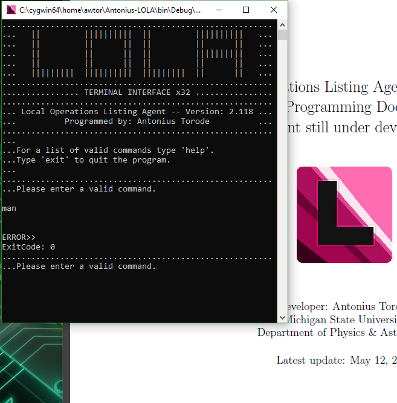

Projects
This page is a place where I can display current projects or projects that I have worked on in the past. These range from personal projects that I have began or created in my spare time to projects I have done related to work or school.
Books
Antonius' Handbook (2016)
This document is a compilation of useful formulas, definitions, constants, and general information used throughout my own schooling as a reference while furthering education. It’s purpose is to provide a complete ’encyclopedia’ per say of various mathematical and significant ideas used often. The idea and motivation behind it is to be a quick reference providing easily accessible access to necessary information for either double checking or recalling proper formula for use in various situations due to my own shortcomings in matters of memorization.
Programming
IDA: Interfacing Data Application (2020)
IDA (Interfacing Data Application) is a GUI program designed for viewing and manipulating various binary data. This data is formatted in various formats used by satellite gps related systems for storing information. It provides tools to read and edit binary files in a human readable way. This program was designed for and is owned by Applied Research Laboratories (ARL) and is therefore not open source.
MIA: Multiple Integrated Applications(2017)
MIA (Multiple Integrated Applications) is designed to be a collection of scripts, tools, programs, and commands that have been created in the past and may be useful in the future. It’s original idea was a place for the original author to combine all of his previous applications and codes into one location that can be compiled cross platform. MIA is written in C++ but will contain codes that were originally designed in C#, Java, Python, and others. MIA is created for the authors personal use but may be used by others if a need or desire arises under the terms of Antonius’ General Purpose License (AGPL).
GINA: Generations of Nuclear Activity (2017)
GINA (Generations of Nuclear Activity) is a program created at the National Superconducting Cyclotron Laboratory (NSCL). It's purpose is to perform calculations of nuclear decay rates for a neutron rich isotope chain in order to determine the contamination that is produced over time.

LOLA: Local Operations Listing Agent (2017)
The Local Operations Listing Agent (referred to as LOLA) is a program originally designed for use within the Physics & Astronomy department at Michigan State University (MSU). LOLA is designed to gather the desired information about a Microsoft Windows computer it is ran on. This information is important to be stored for the Helpdesk support team in order to keep an up to date record of all of the computers it is responsible for maintaining. The original solution to this was to simply record all needed information and save it within a directory, but LOLA provides a fast implementation to gather all requested information in a simple click. This program is not open sourced and belongs to Michigan State University, although solely created by me.
Publications and Papers
Extracting the Anharmonic Properties of the G-Band in Graphene Nanoplatelets (2020)
Collaborators. Ilias Efthimiopoulos, Sathish Mayanna, Elissaios Stavrou, Antonius Torode, Yuejian Wang
Abstract. We have examined the effect of temperature and pressure on the Raman-active G-band of graphene nanoplatelets with an average thickness of 4 nm. Measuring the Raman mode frequency and width of the G-band as a function of temperature and pressure allowed us to extract the individual factors contributing to the frequency and width of the G-band, that is, the volumetric (thermal expansion) and anharmonic (phonon–phonon interactions) terms responsible for the Raman shift and the electron–phonon coupling and anharmonic contributions controlling the width/lifetime of the G-band. Considering the available literature, the significant role of the anharmonic effects in understanding the G-band physical processes in carbon-based systems is highlighted.
Software Development to Determine the Optimal Parameters of a Tape Transport System (2018)
Collaborators. A. Torode, M. K. Smith, A. Spyrou, C. Harris, S. Lyons, A. C. Dombos, S. N. Liddick
Abstract. To better understand the process of nucleosynthesis in stars today, advanced nuclear physics techniques are needed. At the National Superconducting Cyclotron Laboratory, at Michigan State University, a new tape transport system has been developed for this purpose. Radioactive nuclei can be implanted on the tape system, and after detecting the products of their decay, the tape rotates to remove any remaining unwanted activity. The present work focuses on the development of software to be used for calculating the optimum settings for experiments using the tape transport system.
A Review of Quantum Cryptography (2017)
Abstract. Many flaws exist with traditional encryption methods which leave new innovations like quantum cryptography as a subject of high interest. As quantum computing advanced, the security of traditional methods are greater threatened. Quantum cryptography is a method of sending quantum transmissions to create a secure random key shared between two parties so that traditional encryption methods can be utilized effectively. The process utilizes the Robertson uncertainty principle with further advances using quantum entanglement. This process, including flaws and current hacking attempts are discussed in detail.
Characterizing a Tape Station and Beta Detector For Radioactive Isotope Beam Experiments (2017)
Collaborators. A. Torode, M. K. Smith, F. Naqvi, E. Zganjar, P. deYoung, A. C. Dombos, C. Harris, A. Spyrou
Abstract. In order to better understand the nucleosynthesis of heavy elements, advanced techniques are needed to study decays of neutron-rich nuclei and to constrain astrophysical models. In conjunction with the Summing NaI(Tl) detector (SuN) at the NSCL, a tape station is being developed to optimize these measurements. A radioactive isotope beam will be implanted directly onto metallic tape at the center of SuN. The primary ions will beta-decay toward stability, however radiation from the daughter nuclei presents a significant source of contamination. The tape rotates so that the implantation point moves into a shielded box outside of SuN to remove the contamination after a certain time. The timing depends on the half-life of the primary and daughter ions so a simulation was developed to determine effective timing parameters to use in each experiment. A new plastic scintillator will be used in conjunction with the tape to detect beta particles. Light from the plastic will be collected with wavelength shifting fibers that will be coupled to photomultiplier tubes outside of SuN. The status of the tape station, including the simulation and characterizing of the fiber detector will be discussed.
Exploration of the Quantum Casimir Effect (2017)
Abstract. Named after the Dutch Physicist Hendrik Casimir, The Casimir effect is a physical force that arises from fluctuations in electromagnetic field and explained by quantum field theory. The typical example of this is an apparent attraction created between two very closely placed parallel plates within a vacuum. Due to the nature of the vacuum’s quantized field having to do with virtual particles, a force becomes present in the system. This effect creates ideas and explanations for subjects such as zero-point energy and relativistic Van der Waals forces. In this paper I will explore the Casimir effect and some of the astonishing mathematical results that originally come about from quantum field theory that explain it along side an approach that does not reference the zero-point energy from quantum field theory.
A Brief Review of Electromagnetic Scattering Properties and Interactions With Carbon Nanotubes (2017)
Abstract. Electromagnetic radiation is a key concept in understanding modern technology and properties of interactions between various matter. The current models and developments of scattering effects against Carbon nanotubes are examined and discussed. A variety of the current modeling techniques are mentioned including method of moment analysis and recursive methods along with examples of the data and conclusions collected from multiple research teams. This leads to some possible implications and applications which are briefly mentioned and discussed such as electromagnetic shielding and possible manipulation of scattering wave patterns.
A Brief Review of Nuclear Pasta Models and Theoretical Predictions (2017)
Abstract. Background: Nuclear Pasta, which is named after it's structure, is a model that describes various structures of matter in very high density situations such as that of a neutron star. Method: Through simulations using algorithms such as minimum spanning trees, which determine how nuclei interact with those around it, we can model the structure that matter may take in neutron stars. Through these simulations, we can gain an understanding of the behavior that nuclear matter exhibits under specific conditions. These simulations take massive amounts of computational power and time to run but the results allow us to see the changes that density and other parameters have on matter formation. Results: These simulated structures (see figures in text) are referred to as nuclear pasta due to the pasta like structures that matter forms which resemble that of lasagna, spaghetti, gnocchi and others. Conclusion: Through the nuclear pasta simulations, we can determine that density has a high affect on the nuclear structure and that both coulomb attraction and short range nuclear interactions play a pivotal role in high density nuclear structures.
Graphics and Design
d0sag3 Films (2012)
I have always done a little bit of everything. This is my film, animation, and graphic design title. d0sag3 was my X-box gamer name. Many of my projects include introduction animation for gaming groups, banners and wallpapers. Some of my first projects included paid projects for Detroit In Focus where I created some of the introduction and transition scenes of a MMA promotional video found here. For a more comprehensive list of projects you can visit the D3F page with the link below!
Miscellaneous Projects
Git Website Tutorial (2021)
This is a webpage dedicated to giving tutorials and tips for creating a website from scratch using github.io. It is designed to help share information I have learned regarding website design and to help further develop/sharpen my skills in the related field simultaneously.